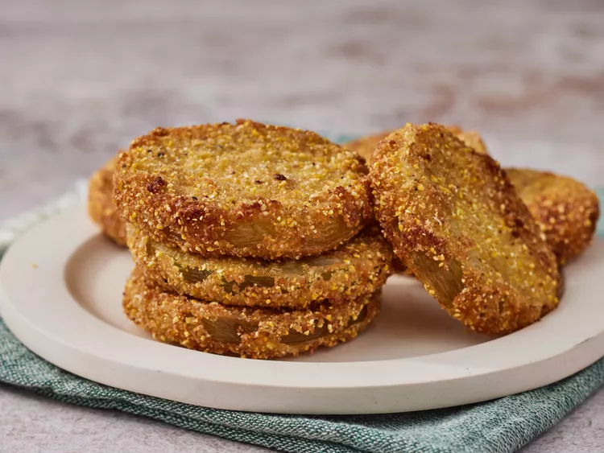

Fried Green Tomatoes
Home

Description
Fried green tomatoes are a very simple appetizer with a self explanitory name. Unripe red tomatoes seasoned, breaded, and fried to perfection.
Fried green tomatoes were honestly not my favorite thing when I first tried them. I got to eat them for the first time when I visited Georgia to see my dad. But they grew on me and now whenever I visit family over there I secretly hope that they are planning to make them.
Ingredients
- 4 large green tomatoes
- 2 eggs
- 1/2 cup of milk
- 1 cup all-purpose flour
- 1/2 cup cornmeal
- 1/2 cup bread crumbs
- 2 teaspoons coarse kosher salt
- 1/4 teaspoon ground black pepper
- 1 quart vegetable oil for frying
Steps
- Gather all ingredients
- Slice tomatoes 1/2 inch think. Discard the ends.
- Whisk eggs and milk together in a medium-sized bowl. Scoop flour onto a plate. Mix cornmeal, bread crumbs, salt, and pepper on another plate. Dip tomatoes into flour to coat. Then dip tomatoes into milk and egg mixture; dredge in breadcrumbs to completely coat.
- Heat oil in a large deep skillet to 375 degrees F (190 degrees C). Place tomatoes in hot oil in batches of 4 or 5, to prevent them from touching; fry until crisp and golden brown on one side, then flip and fry on other side.
- Transfer fried tomatoes to a paper towel-lined plate to drain. Repeat with remaining tomatoes.
- Serve hot and enjoy!
Recipe by Diana Swenson-Siegel